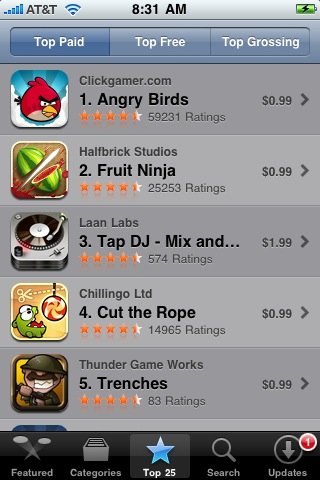

I was noting to an entrepreneur friend Facebook's recent decision to deliver their mobile apps via HTML5 ( http://blogs.wsj.com/venturecapital/2011/01/25/with-plenty-of-cash-facebook-targets-growing-mobile-market/):
“Mobile is the primary focus for our platform this year,” [CTO Bret Taylor] said, noting that 200 million people are currently accessing Facebook on mobile devices. Not only is that group twice as active as their desktop counterparts, that user segment is growing faster than any other, he said.
That growth, combined with what Taylor called the “inherent engineering challenge” of mobile today, represents a major headache for him and the tech team he leads at Facebook.
Namely, whenever they update a feature on the site, they have to do seven versions, so it can run on the iPhone, Android and other platforms now in use.
“HTML5 is the future platform,” he said. “That’s where we’re putting a huge amount of our resources.”
By developing for the browser, they don't have to create separate versions for iOS, Android, Symbian, Blackberry, etc.
My friend said: But the user experience is unpleasant where you have to bookmark a link and save it to the desktop (so that it will look like a "normal" app). And he noted that since connectivity is so spotty in North America (and, I would add, in certain buildings and on the subway, etc.), web delivery is problematic. Finally, he said: "Yes, it takes more work to make an app, and to maintain it. But wouldn't you rather have more usage?"
To which I said:
I think most of your points have solid rebuttals. I should probably go through them, because I have been asked by a number of developers and entrepreneurs whether they should be developing native or HTML5 apps . . .
Just speaking for myself, the browser experience of the NY Times on the iPad is much better than the app. And the Times has browser-based apps that are awesome (example: http://www.nytimes.com/skimmer/ -- not sure why the Times hasn't flogged this more), but don't yet work very well on the iPad. If they did . . .
A really interesting case is the New Yorker. This is currently being delivered whereby each separate issue comes down as a separate app. I would bet that the motivation is connectivity (besides greed -- each issue is $5), so the whole content of each issue is downloaded. But no one's buying it, either economically or conceptually. 6. If I can get more usage by writing one app that can be delivered to Apple, Android, Blackberry, Symbian, etc., etc., don't I get more users that way? 7. Then there's the question of getting access to the "bare metal" for speed or services. Android apps are written in Java, so you don't get that anyway (well, it's awesome, but it's still not right down there at the metal). There are apps on the Apple mobile infrastructure that are hard to imagine without being written in Objective C, so I'll grant that there's a class of applications that would be hard to do in HTML5.
What am I missing? I think mainly, and obviously, the economic model of the app store. It's great to sell your product via Apple or Android's marketplace. But if your app is free, as is Facebook's, I'm just not seeing it. Games, audio and video apps: These I can see the need for native delivery and the money mechanism of the app store. Indeed, the top-downloaded and top-grossing paid apps on the app store are all games or audio:

But for business-oriented apps . . . I'm just not seeing much of a downside to HTML5.
Thoughts?
comments powered by Disqus